Materials
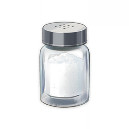Salt
Salt
Food and Potions
Cooking Ingredient
A savory seasoning. A precise but adequate amount will elevate the quality of the cuisine.
Sources:
Sold at general goods shops
Used by food:

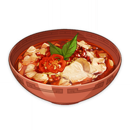
Black-Back Perch Stew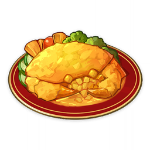
Golden Crab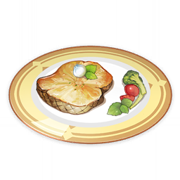
Sunshine Sprat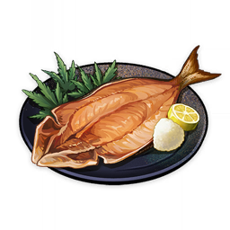
Dry-Braised Salted Fish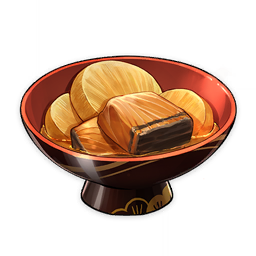
Radish and Fish Stew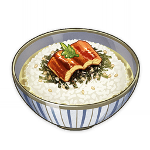
Unagi Chazuke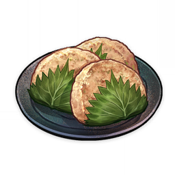
Sangayaki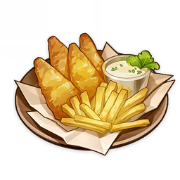
Fish and Chips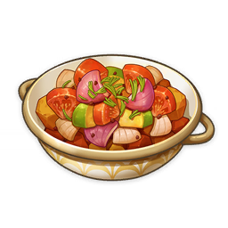
Tasses Ragout
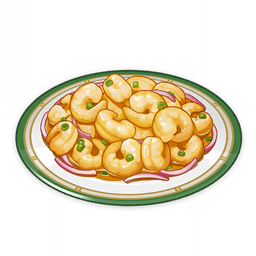
The Palace JewelsDescription:
A savory seasoning. A precise but adequate amount will elevate the quality of the cuisine. It is said that someone once lived who implored his descendants to "Be unto this world as salt is unto rocks."